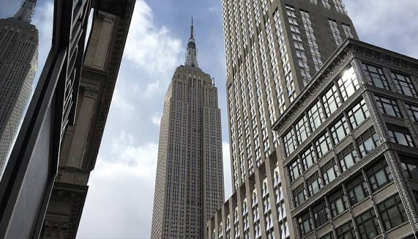
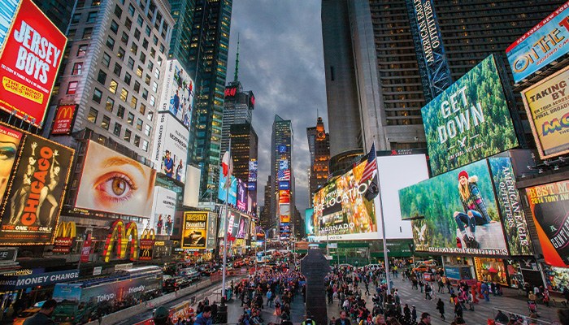

Fundado por NYC
Aprende sobre el pasado de la ciudad y cómo experimentar hitos en su historia hoy.
ver másAprende sobre el pasado de la ciudad y cómo experimentar hitos en su historia hoy.
ver más
El en Empire State tendras una vista hermosa de toda la ciudad de Nueva York
ver más
Vida nocturna, mercados y luces por toda la cuidad de Nueva York
ver más